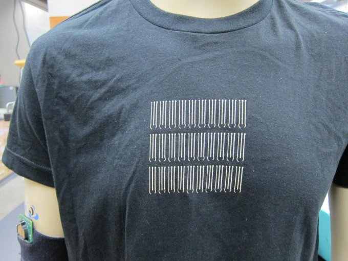

Одежда с регулировкой температуры тела
Представьте ткань, которая сможет постоянно поддерживать комфортную температуру вашего тела, независимо от того, вокруг холодно или тепло.
Адаптивная текстильная технология с активным охлаждением и нагревом).
Он предполагает разработку одежды, которая бы регулировала комфортную температуру вокруг своих обладателей.
Таким образом я рассчитываю снизить энергозатраты в жилых домах и административных зданиях.
Если в помещении находится всего один или два человека, нагревать или охлаждать его целиком финансово неэффективно.
